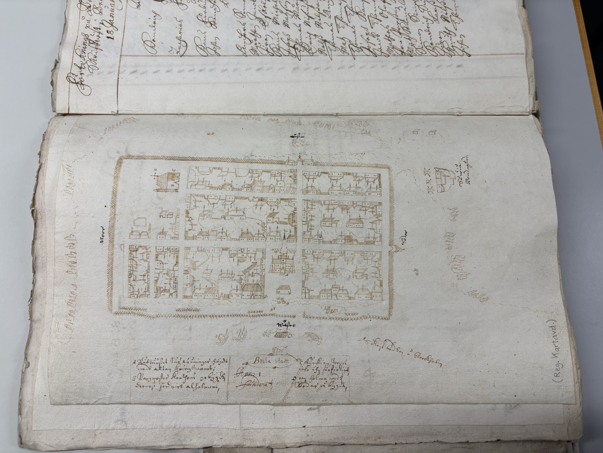

J. Lintumies · Taustatyö · Tuomarniemen Toivo
Romaanit ovat fiktiota. Luvut eivät ole.
Romaanit ovat fiktiota. Luvut eivät ole — ja tässä ne ovat tarkistettavina.
Kun kirjassa sanotaan, että tuulivoima tuottaa kovalla pakkasella lähes nollan, että koira erottaa hajun tietyltä etäisyydeltä tai että öljy käyttäytyy jään alla eri tavalla kuin avovedessä — se on tarkistettu ennen kuin se on kirjoitettu. Nämä katsaukset ovat se tarkistus. Ne on kirjoitettu ensin itselleni ja vasta sitten julkaistavaksi, ja siksi ne sisältävät myös sen, mitä ei tiedetä.
Jokaisessa on alussa Lukijalle-osa tavallisella suomella ja lopussa rajoitteet. Katsaukset kestävät lukemisen ilman romaaneja, ja moni niistä on syntynyt myös ilman niitä. Aineisto ja laskelmat luovutetaan pyynnöstä, myös ja erityisesti kritiikkiä varten.
Braheasta ei ole karttaa ja Lieksan skanssin sijainti on tuntematon. Krigsarkivetin suomalaisia karttoja ei ole skannattu, joten verkkohaun tyhjä tulos ei todista mitään — se piti kysyä ihmiseltä. Kysyin, ja vastaus oli ei. Sivutuotteena sain kuvan, jonka olin julkaista väärän kaupungin nimellä.
Maaliskuun 29. päivänä 1726 Pielisjärven kirkonkirjaan kirjoitettiin kaksi merkintää samalle aukeamalle. Vasemmalla vihittiin luutnantti ja neiti Christina Affleck. Oikealla haudattiin neidon isä, majuri Simon Affleck, joka oli kuollut kymmenen kuukautta aiemmin. Hautapaikkaa ei kerrota, eikä sitä voi enää selvittää.
Rahvas rakensi Lieksan varustuksen omalla kustannuksellaan ja piti sitä kunnossa. Se anoi itselleen päällikön ja päätti käräjillä hänen palkastaan. Sen miehet opetettiin siellä käsittelemään aseitaan. Ja vuonna 1688 sen omat valtuutetut suljettiin siihen yöksi.
Vuonna 1653 Pietari Brahe perusti Lieksanjoen suulle kaupungin. Vuonna 1688 sen talot purettiin ja kadut kynnettiin pelloksi. Karttaa ei ole säilynyt yhtäkään — mutta kaupungin oma raastuvanoikeus kirjoitti pöytäkirjaa, ja kruunun verokirjat kertovat, ettei kaupunki ollut kirjanpidossa koskaan kaupunki.
Romaanien taustatyö. Jokainen kirjoissa esiintyvä luku on tarkistettu tässä.
Suomen sähköjärjestelmän riittävyys tehon näkökulmasta 2026–2035. Riittävyydestä keskustellaan terawattitunteina vuodessa, mutta toimitusvarmuus ratkeaa megawatteina yhdellä tunnilla. Tammikuun 2026 kulutusennätys, tehoreservin nollapäätös ja se, mitkä toimenpiteet ehtivät vaikuttaa ennen 2030-lukua.
Taustatyötä kirjaan Sähkökatko ja paskakuski
Miksi tuulituotannon ei tarvitse pysähtyä, jotta tehotase pettää. Turbiinin teho on tuulennopeuden kolmas potenssi: nopeuden puolittuminen vie 87 prosenttia tuotannosta. Mukana 86 vuoden säädata, El Niño -hypoteesin testaus ja hydrologisen taseen vaikutus hintaan.
Taustatyötä kirjaan Sähkökatko ja paskakuski
Talvinen öljyvahinko on eri ongelma kuin kesäinen: öljy ei pysy pinnalla vaan hakeutuu jään halkeamiin, puomi ei ulotu jään alle eikä harjakeräin kerää sitä mitä ei ole pinnassa. Vuonna 1979 öljy painui jäiden alle ja ilmestyi kahden kuukauden kuluttua neljänsadan kilometrin päässä. Mukana aritmetiikka: torjuntatavoite kattaa kolmasosan yhdestä tankkerilastista.
Taustatyötä kirjaan Jääraja
Vuonna 1921 Seiskarissa asui 848 ihmistä neljällä neliökilometrillä — Suomen tiheimmin asuttu maalaiskunta. Saari on lähempänä Pietaria kuin lähintä suomalaista kaupunkia, ja se eli siitä: silakkaa, hylkeennahkaa ja meren pohjasta nostettuja katukiviä. Kun raja sulkeutui 1918, talous kuoli — ja kieltolaki oli kolmentoista vuoden korvike. Kun sota tuli, saari oli jo menettänyt puolet väestään.
Toinen osa seuraa yhtä taloa yhdentoista sukupolven ajan, 1750-luvulta nykypäivään. Kolmas osa on siemeniä mahdolliseen seuraavaan kirjaan: hovinarri joka omisti saaren, vuosi jolloin saari oli tyhjä, ja hyljekoirat jotka jäivät rannalle.
Tässä versiossa mukana koko sanomalehtiaineisto vuosilta 1860–1939. Se paljastaa kaksi asiaa: lehdistön Seiskari ei ollut kalastajien vaan hallinnon saari, ja sukunimen vaihdos Hotasesta Rantalaksi löytyi päivättyinä kuulutuksina vuosilta 1905 ja 1906 — mikä kumosi sen, mitä olin aiemmin väittänyt.
Taustatyötä kirjaan Jääraja
Lehdistökatsaus · vapaasti käytettävissä
Korpustutkimus siitä, mitä suomalainen sanomalehdistö kirjoitti Seiskarista kahdeksankymmenen vuoden ajan. Saari mainitaan aineistossa 6 150 kertaa. Menetelmänä 41 teemasanaston läheisyyshaku ja 831 poimittua tekstikatkelmaa.
Päälöydös kääntää totutun kuvan: suurin teema ei ole meri vaan kirkko ja seurakunta (465 osumaa), ja kunta ja koulu tuottavat yhdessä enemmän kuin kalastus. Saaren historian tunnetuin jakso, kieltolain pirtuvuodet, tuottaa yhteensä 38 osumaa. Aineistosta löytyivät myös alkuperäiset nimenmuutoskuulutukset vuosilta 1905 ja 1906 sekä nimeltä mainittuja seiskarilaisia jäihin ajautumisineen ja virkakuulutuksineen.
Aineistoraportti Saari joka eli Pietarista -katsauksen taustalla
Tuomiokirja-aineistoa · vapaasti käytettävissä
Mitä tapahtuu, kun saarelaisten kohtaamiset esivallan kanssa haetaan oikeuden omista pöytäkirjoista eikä lehdistä? Kansallisarkisto on lukenut tekoälyllä yli seitsemän miljoonaa sivua käsin kirjoitettuja tuomiokirjoja, ja Viipurin raastuvanoikeuden aineisto ulottuu vuoteen 1924 — eli kieltolain viisi ensimmäistä vuotta ovat luettavissa nimineen ja rangaistuksineen.
Aineisto kumosi kaksi asiaa, jotka olin aiemmin kirjoittanut. Kieltolakivuosien takavarikot eivät pääosin olleet pirtua vaan suolaa, saippuaa, tulitikkuja ja ruista — matkalla itään, nälänhädän puolelle. Ja saarelaiset kävivät järjestelmällistä kauppaa Suomen aluevesillä ankkuroineiden venäläisten sota-alusten kanssa; yhdestä pysäytetystä moottoriveneestä löytyi 1 692 hopearuplaa koneen alle kätkettynä.
Vanhin kerros on 1880-luvulta, ja siinä on aineiston ikävin yksityiskohta: miehiä tuomittiin toistuvasti purjehdusrikoksesta, koska he olivat purjehtineet Pietariin ilman passia — ja nimismiehen konttorista olivat passilomakkeet loppu. Sama nimismies sai puolet sakosta.
Taustatyötä kirjaan Jääraja
Miksi Venäjä ei hajoa niin kuin Neuvostoliitto. Vuoden 1991 hajoaminen oli siisti, koska se seurasi valmiita saumoja. Nyky-Venäjällä niitä ei ole — ja siksi kysymys ei olisi rajoista vaan siitä, kuka komentaa mitäkin asetta.
Taustatyötä koko Rajamaa-sarjaan
Liittolaisten valvontalennot Suomen yllä: mitä kalustoa, mihin se pystyy, ja miksi juuri nuo reitit. Radiohorisontti selittää lentogeometrian kokonaan. Ja se kysymys jota kysytään väärin päin — selitystä ei vaadi jälkien katoaminen vaan se, että ne olivat päällä.
Taustatyötä kirjaan Majakkaraja
Merenpohja strategisena tilana. Kaapeli siirtää, kaapeli kuuntelee — ja kaapeli on halpa rikkoa. Mukana kuituoptisen kuuntelun fysiikka, Itämeren akustiikka, sukellusveneet, kaapelivauriot ja se mitä on syytä olettaa jätetyn kertomatta.
Taustatyötä kirjaan Jääraja
Hajuaistin fysiikka, jäljen ikägradientti ja kolme eri työtapaa. Ja se epämukava luku: kokeessa, jossa etsittävää ei ollut lainkaan, ohjaajan uskomus tuotti enemmän virhemerkkauksia kuin koiran oma kiinnostus. Koirakko on kahden osan mittalaite, ja epävarmempi osa kävelee kahdella jalalla. Ja ratkaisevin tekijä ei ole rotu vaan tunnit: jospa sille vuan näättäs mehttee.
Taustatyötä kirjaan Majakkaraja
Miksi suomalainen virkamies ei pönötä? Vastaus on routavuosissa: kun lain noudattamisesta tuli vastarintaa, virkamiehen valta alkoi tulla laista eikä virasta — eikä sellaista tarvitse esittää. Mukana Rajavartiolaitoksen vaikenemisen perintö, valvonnan aritmetiikka, se mikä poliisin ympärillä on oikeasti kriisissä — ja Seiskari, jonne lähetettiin esivalta.
Taustatyötä kirjaan Jääraja
Kalastuksenvalvojan toimivalta pykälätasolla: mitä hän saa tehdä, mitä ei — ja kuka valvoo valvojaa. Keskeisin löydös on symmetria: laki antaa valvojalle kolmiportaisen keinovalikoiman kalastajaa kohtaan ja viranomaiselle rakenteeltaan saman valvojaa kohtaan. Sama tikas molempiin suuntiin.
Taustatyötä kirjaan Jääraja
Pielisjoessa oli järvilohen lisääntymisalueita 177 hehtaaria. Niistä hävisi 171. Ja lajin olemassaolo näissä vesissä osoitettiin tieteellisesti vasta kahden ratkaisevan padon valmistuttua. Syksyllä 2025 tehtiin ensimmäinen onnistunut korjausyritys kuuden kalan perimällä — seitsemänkymmentä vuotta päätöksen jälkeen.
Taustatyötä kirjaan Jääraja
Sarjan tunnuslauseen tarkistus. Suomessa on laskettu noin kymmenentuhatta lintulinjaa seitsemässäkymmenessä vuodessa, ja työn ovat tehneet vapaaehtoiset — se on ainoa tämän sarjan aihe, jossa vertailuaineisto oli valmiina. Mukana kaikki kirjoissa esiintyvät lajit — ja kaksi joita ei ole: kottarainen ja peltosirkku, joiden katoamisessa syytettiin ensin ulkomaalaisia.
Koko sarjan tunnuslauseen tarkistus
Arkistokysely · vapaasti käytettävissä
Tämä ei ole katsaus vaan kertomus siitä, mitä kysyin, mitä vastattiin ja mitä sivutuotteena tuli. Kielteinen hakutulos on myös tulos, ja sen kirjaaminen säästää seuraavalta saman työn. Ja lopussa on virhe, jonka olin tekemässä — se on tässä siksi, että se on tämän kertomuksen hyödyllisin osa.
Kaksi asiaa on tässä työssä ratkaisematta, ja molemmat ovat sijaintikysymyksiä.
Ensimmäinen on kaupunki. Braheasta ei ole säilynyt yhtäkään karttaa. Ainoa aikalaiskuva kaupunkialueesta on pormestari Henrik Ahlholmin piirros, jonka hän lähetti Pietari Brahelle toukokuussa 1664 tämän heinäkuussa 1663 esittämästä pyynnöstä. Siinä on kehä, jonka sisällä lukee stadz rum, ja sen ympärillä tsasouna ja Lieksan kylä. Se on liian karkea georeferoitavaksi. Kaikki muu, mitä kaupungin sijainnista olen kirjoittanut, on päättelyä tilaketjusta ja kirkon paikasta — ja päättely on aina heikompaa kuin viiva paperilla.
Toinen on skanssi. Lieksaan rakennettiin ruptuurisodan aikana hirsivarustus, jonka pyöreät kulmatornit viimeisteltiin 1673–74. Sen sijaintia ei ole koskaan määritetty. Linnoituksesta on todennäköisempi tehdä piirustus kuin kauppalasta, ja jos sellainen on tehty, se on tehty sotilashallinnon tarpeisiin. Sen paikka olisi Tukholmassa, ei Helsingissä.
Ja yksi menetelmällinen syy painoi enemmän kuin kumpikaan näistä. Krigsarkivetin suomalaisia karttoja ei ole skannattu, koska ne oli jo aikanaan turvafilmattu. Niitä ei siis voi tarkistaa verkosta lainkaan, eikä poissaoloa hakutuloksista voi tulkita miksikään. Juuri sellaisessa tilanteessa kirjeen kirjoittaminen kannattaa: kysymys on siitä, mitä kone ei näe.
Ajoitus teki asiasta kiireellisen. Lieksan keskustassa on tätä kirjoitettaessa käynnissä arkeologisia koe-etsintöjä. Kartta, joka löytyisi nyt, voisi vaikuttaa kaivausten kohdentamiseen. Kuukauden kuluttua se olisi historiaa jälkikäteen.
Lähetin 27. elokuuta 2026 Riksarkivetiin kirjeen, jossa oli kolme kysymystä.
Yksi. Onko Krigsarkivetin kokoelmassa Utländska stads- och fästningsplaner mitään nimillä Lieksa, Liexa, Pielisjärvi, Brahea tai Pielis skans vuosilta 1650–1720? Kohteeksi nimesin nimenomaan skanssin, en kaupunkia.
Kaksi. Sisältävätkö Skoklostersamlingen II:n sarja Brev till Per Abrahamsson Brahe. Från ämbetsmän tai Rydboholmssamlingen liitteenä piirroksia Kajaanin vapaaherrakunnan virkamiehiltä, erityisesti Lieksan voudilta Henrik Ahlholmilta? Perustelu oli suora: Brahe pyysi häneltä avritningin, ja Ahlholm lähetti sen. Jos yhden liitteen tiedetään kulkeneen, on kysyttävä kulkiko muita.
Kolme. Mihin muualle Käkisalmen läänin tai Kajaanin vapaaherrakunnan karttamateriaali on tältä ajalta voinut päätyä?
Kirjoitin ruotsiksi ja sanoin, että kielteinen vastaus on myös vastaus. Kirje sai diaarinumeron RA-FF 2026/073422.
Vastaus tuli kahdessa osassa neljän päivän välein, kahdelta eri arkistonhoitajalta, ja se oli molemmilta kielteinen.
31.8.2026, Krigsarkivet. Kaupunki- ja linnoituspiirustusten kokoelmasta eikä käsinpiirrettyjen kartastojen kokoelmasta ei löytynyt mitään nimillä Brahea, Lieksa, Liexa, Pielisjärvi tai Pielis skans. Vastaaja totesi näiden olleen ne kaksi todennäköisintä kokoelmaa. Brahestadista eli Raahesta piirustuksia sen sijaan on useita — sama kuvio, joka toistuu tässä työssä lähteestä toiseen. Jatkokohteiksi nimettiin Krigsarkivetin suomalaiset käsinpiirretyt kartat, Finska kartor, Finska rekognosceringsverkets kartor, Riksarkivetin aihekokoelmat sekä Kungliga biblioteket ja Uppsalan yliopistonkirjasto.
1.9.2026, Riksarkivet Marieberg. Ei osumia näilläkään nimillä. Vastaaja kertoi käyneensä läpi Skoklosterin kirjeenkirjoittajarekisterin ja yksityisarkistojen vastaavan rekisterin. Ahlholmin liitteistä ei siis ole jälkeä siellä, mihin ne olisi luontevimmin arkistoitu.
Kaksi asiaa on siis nyt kirjattu. Skanssista ei ole piirustusta niissä kokoelmissa, joissa sen kuuluisi olla. Ja Ahlholmin vuoden 1664 kartta pysyy sinä mitä se on ollut: ainoana aikalaiskuvana, ja se on Kansallisarkistossa Helsingissä.
Rajaus on syytä sanoa ääneen. Kielteinen tulos koskee nimettyjä kokoelmia ja nimettyjä hakusanoja. Se ei sulje pois sitä, että aineistoa olisi muualla tai toisen nimen alla — 1600-luvun asiakirjassa Lieksa voi olla Liexa, Lexa, Pielis tai pelkästään Kexholms län.
Toinen vastaajista oli ajanut haun myös Riksarkivetin topografisiin rekistereihin. Sieltä tuli osuma, joka ei koskenut Braheaa lainkaan. Hän kertoi löytäneensä vuoden 1659 asemakaavan Kammarkollegietin sarjasta Städernas acta, niteestä Kajana, volym 2, ja lähetti siitä kännykkäkuvan.
Kirjoitin tähän kohtaan kolme kappaletta siitä, miksi Kajaanin asemakaava on Brahea-työn kannalta kiinnostava vertailukohta: sama mies, sama kaupunkiohjelma, sama vuosikymmen. Sitten suurensin kuvan.

Vuoden 1659 asemakaavapiirros. Kammarkollegiet, Städernas acta, Riksarkivet, Tukholma; niteen tunnus on varmennettavana (ks. alla). Kuva on arkistonhoitajan ottama kännykkäkuva eikä arkistolaatuinen jäljenne.
Piirroksen alalaidassa on kolme selitelaatikkoa. Keskimmäisessä, koristellun kartušin sisällä, lukee kaksi sanaa:
Brahe Stads: — ja sen alla Anno 1… funderat, jonka vuosiluku on haalistunut lukukelvottomaksi.
Brahe Stad on Raahe. Tämä ei ole Kajaani.
Muu kuva sanoo samaa heti kun sitä katsoo. Ilmansuunnat ovat Öster ylhäällä, Söder oikealla, Wäster alhaalla ja Norr vasemmalla — meri on siis lännessä kaupungin alapuolella, ja siellä ovat laivat. Kajaani on sisämaassa joen varrella, ja sen linna hallitsisi mitä tahansa kuvaa siitä; tässä ei ole linnaa. Selitelaatikoiden kohdat ovat A rådhuuset, B pormestarin tontti ja vänrikin holma, C kirkko ja D en holma medh Bodar påbyggd, saari jolle on rakennettu aittoja. Rannikkokaupungin merkit kaikki tyynni.
Ja tunnistus varmistuu kirjallisuudesta. Raahen vanhin säilynyt kuva on tiettävästi vuoden 1659 piirros, jossa kaupunkia ympäröi tulliaita kahtine portteineen ja jossa julkisia rakennuksia on kaksi: tornillinen kaksikerroksinen raatihuone ja puukirkko, jonka rakentaminen alkoi 1651. Kuvassa on ristikkoaita, portit, tornillinen rakennus A ja kirkko C. Vuosiluku 1659 on siis oikein. Kaupunki ei ole.
Näin ollen tämä kuva ei ole tuntematon löytö vaan mitä todennäköisimmin se sama piirros, johon Raahen historiassa viitataan. Sen arvo minulle on nyt kokonaan toisenlainen kuin luulin.
Miten tämän olisi pitänyt mennä väärin. Kuva tuli mukanaan kaupungin nimi. Kirjoitin sen perässä kolme kappaletta Kajaanista, laitoin tiedoston nimeksi Kajaani.jpeg ja olin viemässä sivun GitHubiin. Vasta silloin suurensin kartušin. Katsauksen Kaupunki joka kynnettiin pelloksi ensimmäisessä luvussa on kaksi esimerkkiä siitä, miten lähdekritiikki menee pieleen sähköisessä arkistossa, ja toinen niistä kuuluu: kuvan suurennus ei ole muotoseikka vaan osa lähdekritiikkiä. Kirjoitin sen itse. En noudattanut sitä.
Ja saman luvun ensimmäinen varoitus kuuluu, että Brahen kaksi kaupunkia — Lieksan Brahea ja Raahe eli Brahestad — sekaantuvat toisiinsa järjestelmällisesti, koska ne kantavat samaa nimeä kahdella kielellä ja koska ne kuuluivat samaan läänitykseen ja samaan tilikirjaan. Sen varoituksen kirjoitin kesällä. Elokuun viimeisenä päivänä kävelin siihen itse.
Se on kuva Raahesta — ja Raahe ei ole tässä työssä sattumanvarainen kaupunki vaan koko todistuksen toinen puoli.
Katsaukseni päälöytö on frekvenssi, joka puuttuu: Kajaanin vapaaherrakunnan maakirjoissa 1656–1677 Braheaa ei ole kertaakaan kaupunkina, vaan kyläotsikkona muiden joukossa. Todiste ei perustu siihen mitä lähteistä puuttuu, vaan vertailuun: samassa niteessä, saman kirjurin kädellä, kaksikymmentä sivua myöhemmin on Raahe, jolla on oma porvarisluettelonsa, oma summarivinsä kruunun kirjanpidossa ja punainen lakkasinetti sivun alalaidassa. Lieksan Brahealla ei ole yhtäkään niistä.
Tämä on kuva siitä kaupungista. Se, jolla oli kaikki se, mitä Brahealla ei koskaan ollut, on myös se, josta on piirros — ja Braheasta ei ole. Sama epäsymmetria näkyy nyt neljittäin: maakirjassa, veroluettelossa, Krigsarkivetin kokoelmassa ja tässä kuvassa.
Ja jos joku tutkii Raahen varhaishistoriaa, kuva ja signum ovat tässä hänen käyttöönsä.
Mistä niteestä kuva on. Minulle kerrottiin niteeksi Kajana volym 2. Kuva sanoo Brahe Stads. Kolme vaihtoehtoa: piirros on Raahen omassa niteessä ja nidetieto tuli vahingossa väärin, tai piirros on todella Kajaanin niteessä väärään paikkaan arkistoituna, tai luokitus on tehty aikanaan samalla sekaannuksella jonka kanssa olen painiskellut koko kesän. Olen kysynyt tätä Riksarkivetista. Siihen asti kuvateksti kertoo sarjan muttei nidettä.
Onko Brahealla omaa nidettä. Kammarkollegietin Städernas acta on sarja, jota en tuntenut viikko sitten: kaupunkikohtaiset asiakirjaniput kruunun kamarikollegiossa. Kysyin samalla, löytyykö sieltä nidettä nimillä Brahea, Lieksa, Liexa tai Pielisjärvi. Jos vastaus on ei, se on viides toisistaan riippumaton lähdelaji samasta havainnosta.
Enbergin vuokrasopimus. Lähetin 1.9.2026 Riksarkivetin tutkijapalvelulle erillisen kysymyksen. Vuoden 1688 käräjäpöytäkirja kertoo, että veronvuokraaja Salomon Enberg sai kenraalikuvernööri Jöran Sperlingiltä vuokrasopimuksen 26.11.1684: Pielisjärven kruununtila, 18½ statio-obsaa, yhdeksäksi vuodeksi, joista kaksi obsaa virkataloksi ja hovileiriksi. Juuri niille kahdelle obsalle kynnettiin kaupungin tontit ja kadut. Sopimusta itseään en ole löytänyt Suomesta, ja Käkisalmen läänin tilit tarkastettiin Tukholmassa sarjassa Östersjöprovinsernas guvernements och generalguvernements räkenskaper. Vastausta ei ole vielä tullut.
Kaikki kolme kirjataan tähän kun vastaukset tulevat, kumpaan suuntaan tahansa.
Taustatyötä kirjaan Kaksi laukausta
Tuomiokirja-aineistoa · vapaasti käytettävissä
Joulukuun viidentenä 1668 Brahean raati julisti porvaristolle valtakunnandrotsin myöntämät privilegiot ja määräsi samalla istunnolla kaikkien maalla asuvien porvarien muuttamaan kaupungin tontille neljänkymmenen markan sakon uhalla. Kaupunki oli ollut olemassa viisitoista vuotta ja joutui yhä käskemään asukkaitaan asumaan siellä. Kolmetoista vuotta myöhemmin se lakkautettiin, ja vuonna 1688 sen talot purettiin ja alue kynnettiin pelloksi.
Uutta ei ole aihe vaan pääsy. Kansallisarkisto on lukenut tekoälyn käsialamallilla yli seitsemän miljoonaa sivua tuomiokirjoja, ja Brahean pöytäkirjat ovat nyt haettavissa sanahaulla ensimmäistä kertaa. Niistä nousee kaupunki, jota kukaan ei ole kuvannut sisältäpäin: suomen- ja karjalankielinen raati ruotsalaisen pormestarin alla, kirkkoherra joka voitti pormestarin, porvareita rajan takaa, kolmekymmentä kirvestä joita verrattiin murtojälkeen. Kaupungin lopusta on porvarien oma valitus vuodelta 1688: heidät häädettiin, katot purettiin — kahdessa tapauksessa lesken ja lasten ollessa vielä sisällä.
Ja kruunun verokirjat kääntävät tavanomaisen tarinan toisin päin. Maakirjoissa Braheaa ei ole kaupunkina kertaakaan vuosina 1656–1677: se on kyläotsikko muiden joukossa. Todiste ei perustu siihen mitä lähteistä puuttuu — samassa niteessä, saman kirjurin kirjoittamana, on toinen Brahen kaupunki. Raahella on oma porvarisluettelo, oma summarivi kruunun kirjanpidossa ja punainen lakkasinetti sivun alalaidassa. Lieksan Brahealla ei ole yhtäkään niistä. Kaupunki ei menettänyt asemaansa; se ei saanut sitä koskaan.
Ja veroluettelot ajoittavat katoamisen tarkemmin kuin aiempi tutkimus: vuonna 1679 Brahealla on oma nelisenkymmenen nimen luettelo, vuonna 1682 kaksi verotettavaa taloutta, vuonna 1696 ei mitään. Asiakirjojen vahvistuspaikka seuraa samaa käyrää — Brahea, Lieksa, Liexa gård. Kaupungin nimi ei kadonnut päätöksellä vaan korvautui hallinnon omassa kielenkäytössä ensin kylän ja sitten hovin nimellä.
Tässä versiossa vastataan myös siihen kysymykseen, joka on ollut auki koko ajan: missä kaupunki oli. Kirkon paikka on ollut sama vuodesta 1667 nykypäivään — neljä kirkkoa peräkkäin samalle paikalle — ja se on ainoa Brahean rakennus, jonka sijainti tunnetaan varmasti. Sen rinnalle asettuu tilaketju, joka löytyi Suomen Pankin velkakirjasta vuodelta 1844: Hovila numero 77 ja Rantala numero 80 on lohkottu samasta vanhasta verotalosta numero 41, Hovila on kokonainen manttaali, ja nimi kertoo mistä — hovin maa, ja hovi oli se hovileiri, joka perustettiin kaupungin tonteille 1685. Isojaon aikaan Rantalan oli siirryttävä pois vanhalta tonttimaaltaan, ja molemmat tilat kalastivat Kaupunginniemen rannoilla. Vuoden 1772 todistus kuvaa asutuksen kulkeneen niemestä Hovilan ohi Rantalaan. Aineisto viittaa siihen, että kaupunki sijaitsi kirkon ja Hovilan välisellä alueella. Se on merkitty päätelmäksi eikä havainnoksi.
Yksi asiakirja ratkaisisi tämän, ja se on käyttörajoituksen takana. Maanmittaushallituksen uudistusarkiston arkistoyksikkö D23:b11/1–102 sisältää Lieksan isojaonkartan, jakokirjan ja pyykkiselityksen vuosilta 1840–1847, numerot 1–109, tekijöinä A. J. von Fieandt ja C. F. Durckman. Kartta näyttää palstat numeroituina; jakokirja ja pyykkiselitys kertovat kunkin numeron haltijan ja rajapyykit maastossa. Niistä selviäisi suoraan, missä Rantalan vanha tonttimaa oli ja miten tilojen 41, 77 ja 80 rajat kulkivat suhteessa kirkkoon. Aineistolla on käyttörajoitus, joten sitä ei saa verkosta — se on tilattava tai katsottava paikan päällä. Lieksan keskustassa on tätä kirjoitettaessa käynnissä arkeologisia koe-etsintöjä, ja jos aineisto hankitaan nyt, sen tiedot ovat käytettävissä vielä silloin kun ne voivat vaikuttaa kohdentamiseen. Pyydettävä on nimenomaan jakokirja ja pyykkiselitys, ei pelkkä karttalehti.
Taustatyötä kirjaan Kaksi laukausta
Tuomiokirja-aineistoa · vapaasti käytettävissä
Maaliskuussa 1688 Pielisjärven talonpojat valittivat käräjillä siitä, että heidän oli maksettava palkkaa miehelle, joka vartioi Lieksan skanssia. Kenraalikuvernööri hylkäsi valituksen yhdellä perustelulla: he olivat itse pyytäneet sitä miestä ja palkanneet hänet vapaaehtoisesti. Se kuulostaa hallinnon jälkikäteiseltä selitykseltä. Se ei ole — päätös on luettavissa heidän omilta käräjiltään kolme vuotta aiemmin.
Päällikkyyden vaihtuminen on nyt ajoitettavissa päivämäärätasolle. Luutnantti Lars Björn kuoli keväällä 1684, rustimestari Erich Aahlholm anoi paikkaa syyskäräjillä, kenraalikuvernööri Jöran Sperling nimitti hänet 29.11.1684 — kolme päivää sen jälkeen, kun sama mies oli allekirjoittanut vuokraaja Salomon Enbergin sopimuksen koko pitäjästä. Palkka määrättiin käräjillä seuraavana vuonna, ja tehtävään kuului vartioinnin ohella rahvaan kouluttaminen aseiden käyttöön kiertäviä vihollispartioita vastaan. Skanssi ei ollut vartiotorni vaan pitäjän puolustusjärjestely.
Vastarinta kulki kolmea tietä peräkkäin, ja väkivalta oli viimeinen eikä ensimmäinen. Ensin laki: kirkkoherra kirjoitti rahvaan läheteille matkapassin, kirjelmät kirjoitti pappilassa entinen Kajaanin tullimies, matkaan Ouluun ja Tukholmaan lainattiin 300 taalaria oululaiselta porvarilta — ja kuningas vastasi määräämällä, että kruunun talonpojille on laadittava varma maakirja. Sitten käräjät maaliskuussa 1688, jotka pidettiin vuokraajan omassa hovileirissä ja joilla rahvaan lautamiehet oli suljettu neuvottelujen ulkopuolelle. Ja vasta sitten kansannousu, jonka jälkeen rahvaan omat valtuutetut suljettiin siihen skanssiin, jonka pitäjä oli itse rakentanut.
Lähteet ja käyttöoikeus Kansallisarkiston renovoidut tuomiokirjat Käkisalmen läänin tuomiokunnasta vuosilta 1684, 1685 ja 1688 sekä Pielisjärven vero- ja savuluettelot 1679, 1682, 1686 ja 1696. Keskeiset kohdat on luettu Astian sivukuvista käsialasta suurennettuina. Muiden tutkijoiden vapaasti käytettävissä. Katsauksen tiedot, taulukot ja sitaatit saa käyttää, lainata ja jatkojalostaa vapaasti; lähdeviite on kohteliaisuus, ei ehto. Kolme skanssia koskevaa väitettä on toistaiseksi koneluvun varassa ja merkitty tekstiin erikseen, samoin kymmenen muuta kohtaa, joita aineisto ei kerro. Vuoden 1688 pöytäkirjan foliot 73–92 ovat lukematta, ja skanssin etäisyys rajasta on niissä.
Taustatyötä kirjaan Kaksi laukausta
Tuomiokirja-aineistoa · vapaasti käytettävissä
Kesällä 1686 kolme miestä käveli Pielisjärven pappilaan: veronvuokraaja Salomon Enberg, luutnantti Erich Ahlholm ja lautamies Grels Partain. He tulivat kieltämään kirkkoherraa kalastamasta. Kirkkoherra vastasi jatkavansa kuten ennenkin — hänellä oli kihlakunnantuomarin tuomiot vuodelta 1670, ja jos se ei riittäisi, hän veisi asian kuninkaalle. Hän vei. Kolme vuotta myöhemmin riita oli kulkenut Tukholmaan ja takaisin, ja käräjillä vuokraaja tiivisti kantansa neljään sanaan: det ähr Cronones Fiska, se on kruunun kala.
Katsaus lukee kalastuksen tuomioiden kautta: mitä pyydettiin, millä välineillä, missä ja milloin. Nuotanveto ja nuotta-apajat, verkot, merrat, liistekatiskat, tuulastus ja sataviisikymmentä koukkua yhdessä siimassa. Lohi, siika ja hauki. Kalaa keitettiin apajalla, ja kun kirjuri kohtasi sanan jolle ei ollut ruotsinkielistä vastinetta, hän selitti sen pöytäkirjaan: een half kala kucko, thet är, fisk stelt sin i brudh.
Riidan aiheita on neljä, ja ne toistuvat pitäjästä toiseen. Pato vastaan väylä: laki ei kieltänyt patoamista vaan vaati jättämään aukon, ja kiista koski aina sitä mistä kohtaa — Utrassa yksi pato tyhjensi kahdeksantoista peninkulmaa yläjuoksua, eikä vuokraaja saanut sinä vuonna yhtään nousukalaa. Kutuaika vastaan ruoka: kalastuskielto oli voimassa ja siitä sakotettiin, mutta juuri silloin kala oli helpoimmin saatavissa. Kruunun regaali vastaan vanhat tuomiot, jotka oli myönnetty toisen hallintojärjestelmän aikana. Ja vuokraajan yksityisvesi vastaan talonpojan ikimuistoinen apaja, joka oli hänen mukaansa ollut olemassa ennen kuin meri oli sinne rakennettu.
Mukana on myös se, mitä oikeus perusteli harvinaisen suoraan. Kun Brahean pormestari oli jättänyt patoonsa vain puolen sylen syvyisen veden ja puolustautui sillä, että kolme lastaamatonta venettä mahtuisi rinnakkain, tuomioistuin vastasi: lohi on arka kala eikä seuraa matalaa vettä. Kuuden kyynärän veneväylä auki syvimmästä kohdasta, sakon uhalla.
Taustatyötä kirjaan Kaksi laukausta
Tuomiokirja-aineistoa · vapaasti käytettävissä
Helmikuussa 1697 Pielisjärven käräjillä luetteloitiin, ketkä olivat olleet ryöstämässä Lieksan hovia edellisenä jouluna. Luettelo etenee kylä kylältä, ja Viensuun kohdalla kirjuri kirjoittaa yhden nimen perään: hwilcken blifwit skuten af Affleck — joka on tullut Affleckin ampumaksi. Sitten kirjuri siirtyy seuraavaan kylään. Ei etunimeä, ei aikaa, ei syytä, ei seurausta. Kruunun virkamies oli ampunut talonpojan, ja oikeus käytti sitä henkilötunnisteena. Vuotta myöhemmin sama oikeus kirjaa samalla tavalla, että Meriläisen poika oli ampunut Affleckia päähän.
Simon Affleck on se mies, jonka Suomi tuntee Simo Hurttana. Tässä artikkelissa häntä luetaan alkuperäisistä tuomiokirjoista ja tilikirjoista, sivukuvista suurennettuina. Leinon sotapäällikköä siellä ei ole: kahdentoista vuoden titteliketju on katkeamattomasti siviilivirkamiehen — kirjuri, lääninkirjuri, manttaalikomissaari. Mutta ei siellä ole myöskään sitä väärinymmärrettyä virkamiestä, jonka puolustajat tarjoavat. Väite, ettei hänen julmuudestaan ole asiakirjatodisteita, kaatuu kahteen laukaukseen.
Ja lopulta kyse ei ole miehestä. Vuonna 1710 Pielisjärvi vannoi uskollisuutta tsaarille, ja kapinaa johti kirkkoherra, joka oli Affleckin appi. Sama pitäjä oli vannonut saman valan jo 1656. Kahdesti sadassa vuodessa rajapitäjä totesi, ettei kruunu ollut sen puolella — ja se kertoo Ruotsin vallasta rajalla enemmän kuin yksikään sotatapahtuma. Artikkelin perässä on erillinen tieteellinen yhteenveto: aineisto, menetelmä, löydökset ja rajoitteet.
Tässä versiossa on luettu vuoden 1703 talvikäräjät, ja ne muuttavat kahta asiaa. Affleck on niissä Leutnanten Affleck — ensimmäinen luettu asiakirja, jossa hänellä on sotilasarvo, ja se täyttää aukon titteliketjussa. Ja hän on käräjillä kantajana appeaan vastaan: riita alkaa siitä, että rovasti oli nimitellyt häntä rahvaan kuullen ja kiistänyt hänen arvojärjestyksensä, mutta laajenee kahdeksankohtaiseksi syytelistaksi. Affleck esittää oikeudelle rovastin omakätisen luettelon, josta ilmenee että tämä oli sakottanut seurakuntalaisia ilman laillista oikeudenkäyntiä — ja lautamiehet todistavat, ettei rovastinkäräjiä ollut koskaan pidetty. Oikeus ei ratkaissut asiaa. Se siirtyi Viipurin tuomiokapituliin, ja seitsemän vuotta myöhemmin sama appi johti kapinaa, joka ajoi vävynsä pakoon.
Versiossa 3.3 on siirrytty ensimmäistä kertaa pois tuomiokirjoista. Pielisjärven seurakunnan vihittyjen ja haudattujen luettelo vahvistaa kuolinpäivän 9.5.1725 ja hautauspäivän 29.3.1726 alkuperäisestä — ja paljastaa samalla jotain, mikä ei ole ollut tiedossa: samana päivänä kun isä haudattiin, tytär vihittiin. Merkinnät ovat samalla aukeamalla, vierekkäisissä palstoissa, saman kirjurin kädellä. Christina Affleck ja luutnantti Otto Carl Türimarck. Kirjuri kirjasi myös hautausviiveen itse — sedan han afled — mitä ei tavallisen vainajan kohdalla tehdä.
Hautapaikkaa ei kerrota, vaikka samalla aukeamalla muissa merkinnöissä se sanotaan. Eikä sitä voi enää selvittää: kirkkoon hautaaminen näkyisi hautausmaksun suuruudessa, mutta Pielisjärven seurakunnan talousarkisto alkaa vuodesta 1750 ja tilikirjat vuodesta 1764. Vuoden 1726 kirkontilejä ei ole säilynyt. Mies, jonka nimen Suomi tuntee, on haudattu tunnettuna päivänä tuntemattomaan paikkaan, ja se on lopullista.
Taustatyötä kirjaan Kaksi laukausta
Aihekatsauksia: lähdetilanne koossa, kirja vielä kirjoittamatta. Osa kysymyksistä on tarkoituksella jätetty auki ja merkitty tekstiin.
Kirjan siemen. Näiden tekstien takana on tarina, jota ei ole vielä kirjoitettu: isoisäni Pekka Jukola ja hänen veljensä Juho ja Paavo syntyivät Aunuksen Karjalassa Mäntyselän pitäjän Hokanmäen kylässä, ylittivät rajan Suomeen 1919–1922 ja rakensivat Suojärvelle kauppahuoneen maassa, jossa pakolainen ei saanut omistaa maata. Heidän vanhempansa jäivät rajan taakse.
Mitä aineistot ovat. Nämä eivät ole kirjan lukuja vaan sen pohjatyötä. Osa kokoaa sen, mitä yhdestä perheestä, yhdestä kaupungista tai yhdestä elinkeinosta on asiakirjoissa. Osa esittää teorian — merkittynä teoriaksi. Ja osa on laajaa lähdeaineistoa, joka syntyi näitä tehdessä ja jota kuka tahansa voi käyttää omaan työhönsä.
Yhteinen on menetelmä. Nämä ovat mahdollisia vasta nyt, koska arkistot ovat avautuneet koneluettavaksi: Kansalliskirjaston lehtikokoelma vuoteen 1939 ja Kansallisarkiston tuomiokirjat 1600-luvulta alkaen. Jokainen väite lähteistetään, epävarmuudet sanotaan ääneen, ja se mitä ei tiedetä merkitään tekstiin. Lähdetaso merkitään myös: mikä on luettu alkuperäisestä sivukuvasta ja mikä on pelkän koneluvun varassa. Kun jokin osoittautuu vääräksi, se korjataan näkyvästi.
Helmikuussa 1906 Seiskarin ulkosaarella mies nimeltä Simo Kiili kuulutti virallisessa lehdessä, että hänen nimensä on tästä lähtien Jukola. Puolitoista vuosikymmentä myöhemmin ja viidensadan kilometrin päässä kolme Aunuksesta paennutta veljestä ottivat saman nimen. Näillä kahdella ei ole mitään yhteyttä — ei sukua, ei tuttavuutta, ei tietoa toisistaan.
Ja silti heidän poikansa päätyivät samana syksynä samaan maakuntaan. Seiskarin Jukolan poika kaatui Säämäjärvellä 14.9.1941 palveltuaan kaksi kuukautta ja viisi päivää. Aunuksen Jukoloista nuorin toimi samaan aikaan kansanhuoltoupseerina Aunuksessa — kotimaakunnassaan, josta hän oli paennut kaksikymmentä vuotta aiemmin.
Katsaus kokoaa molempien linjojen asiakirjapohjan: nimenmuutoskuulutuksen, vuoden 1919 syytteen tuoreen silakan viennistä bolševikkien Venäjälle, papintodistuksen jossa pastori vakuuttaa miehen nauttivan kansalaisluottamusta — ja lopuksi luettelon siitä, mitä faktapohjaan vielä puuttuu ennen kuin fiktion voi rakentaa sen päälle. Sekä sen, miksi kirja ei voi käyttää näitä nimiä.
Aihe mahdolliseen tulevaan kirjaan
Vuonna 1938 otettiin Suojärven Suvilahdessa valokuva. Kuvateksti kertoo, että miehet ovat heimosotureita ja että suurin osa on aunuksenkarjalaisia, joilla on vain muistomitalit. Ensimmäisenä on nimetty Juho Jukola, Mäntyselkä — isoisäni veli. Katsaus selvittää, mitä itäkarjalaisista pakolaisista tiedetään: heitä tuli Suomeen parikymmentä tuhatta, he eivät saaneet omistaa maata vaikka lähes kaikki olivat talollisia, ja kansalaisuus tuli hakemuksesta usein vasta kahdenkymmenen vuoden kuluttua. Toinen osa seuraa yhtä perhettä asiakirjoissa. Tässä versiossa selviää myös, mitä kuvateksti tarkoitti — ja miksi veljesten sotaretkistä kertova lause ei voi pitää paikkaansa nuorimman kohdalla.
Aihe mahdolliseen tulevaan kirjaan
Kun olin pieni poika, minulle kuiskuteltiin, että isoisäni ja hänen veljensä olivat käyneet rajan takana — että he menivät sinne silloin kun metsän läpi pääsi, koska he tunsivat metsät ja kylät. Tämä katsaus selvittää, voisiko se pitää paikkansa. Pakolaisten oma lehti julkaisi karjalaksi ensikäden kertomuksia kolhoosipakosta, pidätyksistä ja Solovetskista — ja suomeksi kokouspöytäkirjoja. Jonkun oli täytynyt tuoda ne tiedot rajan yli. Samaan aikaan Yleisesikunnan Sortavalan alatoimisto lähetti rajan yli siviilipukuisia tiedustelijoita, joiden asiamiehet olivat pääosin karjalaisia pakolaisia. Teoria on merkitty teoriaksi, ja mukana on myös se, mikä tekee siitä hankalan: sitä on lähes mahdoton kumota.
Aihe mahdolliseen tulevaan kirjaan
Lehdistökatsaus · vapaasti käytettävissä
Korpustutkimus karjalaisen pakolais- ja heimolehdistön puheenaiheista. Aineistona seitsemän lehteä ja arviolta neljä miljoonaa sanaa, menetelmänä 50 teemasanaston frekvenssianalyysi ja 707 poimittua tekstikatkelmaa. Keskeisiä havaintoja: sana kolhoosi ilmestyy lehtiin vasta 1934 eli neljä vuotta itse tapahtuman jälkeen, mikä on mitattu viive tiedonkulussa rajan yli; vakoilua koskeva sanasto puuttuu lähes kokonaan, alle sata osumaa neljässä miljoonassa sanassa; ja pakolainen esiintyy 1 160 kertaa mutta kansalaisuus vain 15 kertaa.
Aineistoraportti kahden yllä olevan katsauksen taustalla
Sähkömarkkina, sää ja ilmasto. Omaa laskentaa, ei kirjasidonnaisia.
Kun sähkö on kallista, syitä tarjotaan neljä: pakkanen, tyven, vesivarastot, siirtoyhteys. Ne eivät ole vaihtoehtoja vaan vastauksia kahteen eri kysymykseen. Vesi ratkaisee, onko talvi kallis — Norjan marraskuisen täyttöasteen ja talven keskihinnan korrelaatio on −0,73. Sää ratkaisee, mitkä tunnit sen talven sisällä ovat kalliita, ja tuulen puute on selvempi poikkeama kuin pakkanen: kalliilla tunnilla tuulta on viidesosa tavanomaisesta. Ja syy on vaihtumassa. Vielä 2020—2023 Suomen kalleimmista tunneista 88 prosenttia oli kalliita myös Ruotsissa; talvella 2025/26 enää 36. Loput ovat Suomen omia tunteja — ja yli puolella niistä johto Ruotsiin oli täynnä. Lopussa arvio tulevasta talvesta: Norjan altaissa on elokuussa 65 prosenttia, mikä on kolmenkymmenenyhden vuoden jakauman alimmassa kymmenyksessä.
Itsenäinen, ei kirjasidonnainen
Sähkön hinta, verkon kustannukset ja riittävyys kuluttajan näkökulmasta. Onko hintahuoli ja riittävyyshuoli sama asia? Ja kuka maksaa verkon, joka rakennettiin hankkeille joita ei tullut.
Itsenäinen, ei kirjasidonnainen
102 paikkakuntaa, 80 vuotta, ERA5. Kaksi astetta ei tarkoita mitään — siksi käänsin sen kilometreiksi. Kuopion ilmasto on siirtynyt 362 kilometriä etelään, eli suunnilleen Helsinkiin, yhden ihmisen eliniän aikana. Ja yllätys: Inari on lämmennyt vähemmän kuin Kuopio ja Färsaaret tuskin lainkaan. Ratkaisevaa ei ole pohjoisuus vaan etäisyys avomerestä. Lopussa kaikkien 23 suomalaisen paikkakunnan luvut.
Itsenäinen, ei kirjasidonnainen
Kuusi rannikkopistettä, 86 talvea, ERA5. Talvet ovat lämmenneet 2,5 astetta ja kovat pakkaset vähentyneet kolmanneksen — mutta tyynten päivien määrä ei ole muuttunut lainkaan, ja nollan ylitykset ovat lisääntyneet 70 prosenttia. Tammikuussa 2026 tuulivoimatuotanto putosi 0–5 prosenttiin kapasiteetista, eikä syy ollut tyyni sää vaan jää lavoissa — ja jäätäminen tapahtuu juuri siinä kaistassa, joka on kasvamassa.
Itsenäinen, ei kirjasidonnainen
Kaikkien aikojen kulutusennätyksen hetkellä 8.1.2026 Suomi kävi omalla tuotannollaan ja Fenno-Skanissa oli kaksi kolmasosaa vapaana. Ja tuonti huipentuu keskipäivällä, ei kulutushuipussa — koska kun meillä on kylmä, on kylmä myös Ruotsissa. Riittävyys ja hinta ovat eri ongelmia ja osuvat eri hetkiin. Sisältää korjauksen kirjoittajan omaan aiempaan väitteeseen.
Itsenäinen, ei kirjasidonnainen
Kolme omaa laskentaa koko ketjusta Norjan altaista Suomen pistorasiaan. Sademäärä ei ole muuttunut 85 vuodessa, mutta yhä suurempi osa siitä tulee vetenä eikä lumena — ja vain vesi täyttää altaan samana syksynä. Se ei silti riitä: mediaanitasoon tarvittaisiin 18,9 TWh:n syysnousu, ja suurin koskaan mitattu on 14,2. Ja ketjun toisessa päässä Suomi oli talvella tuonnin varassa 88,6 % ajasta, yhteydellä joka on tuontihuipuissa 98-prosenttisessa käytössä.
Itsenäinen, ei kirjasidonnainen
Lukijat kysyivät suoraan: kannattaako ottaa kiinteä sopimus Q1:lle. En vastaa siihen, mutta kysymykseen itseensä voi vastata — ja useimmat kysyvät väärää asiaa. Kiinteä hinta ei ole veikkaus keskihinnasta vaan vakuutus hännästä. Versio 2.0 korjaa version rakenteellisen virheen: jäätäminen ei osu kylmään skenaarioon vaan leutoon, ja halvan lopputuloksen todennäköisyys putosi 25 prosentista 15:een.
Itsenäinen, ei kirjasidonnainen
Katsaukset ovat syntyneet romaanien taustatyönä. Kirjat kertovat saman asian toisella tavalla — ihmisinä, jotka tekevät työtään ja huomaavat liian myöhään mitä on tapahtumassa.